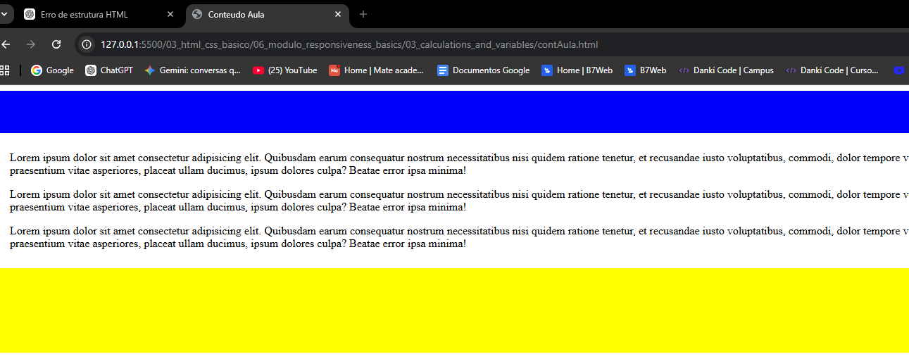
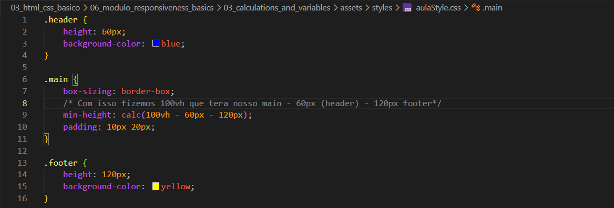
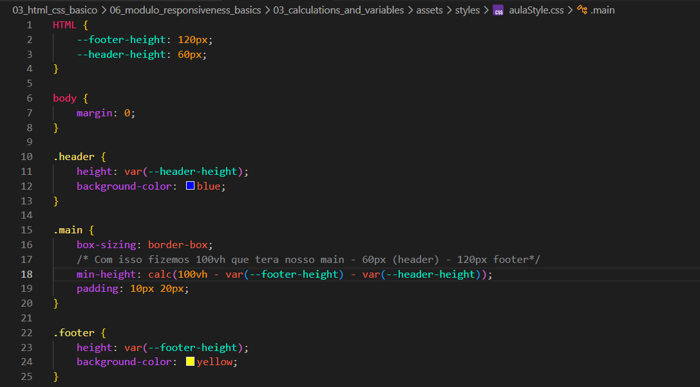

Calculations and Variables
Intro
Agora iremos usar oque aprendemos para podermos organizar a pagina de acordo com oque precisarmos.
Agora iremos usar oque aprendemos para podermos organizar a pagina de acordo com oque precisarmos.
Nesse exemplo iremos supor que queremos ajudar basicamente nosso rodape (footer) de acordo com o tamanho de nosso contedo para que ele sempre fique colado ao final.
Pois no caso se nao configurarmos corretamente, ficara da seguinte forma:

Se por exemplo tentarmos corrigir isso apenas com o uso de margin, pode haver problemas, pois so ficara correto para esse tamanho em especifico.
Para resolvermos esse problema podemos usar o calc ficando da seguinte forma:

Porem mesmo dessa forma ainda teremos problema se por exemplo alterarmos a altura do footer ou outro elemento.
Para contornar esse problema e caso tenhamos que alterar algum valor, para nao precisarmos toda vez alterarmos dois valores, podemos trabalhar com variaveis ou propriedades personalizadas.
Normalmente fazemos isso no elemento raiz (HTML), definimos ums propriedade CSS personalizada, ela deve sempre comecar com 2 hifens (--) seguido por qualquer nome e para usa-lo, basta quando formos passar o valor do height, passar o nome que fizemos para essa variavel exemplo: height: var(--footer-height);. Ficando da seguinte forma:
